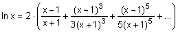
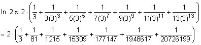
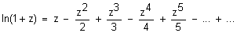
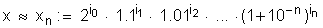
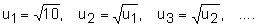
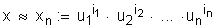

Berechnung von Logarithmen
Geschichtliches s. bei Lord John Napier (Neper).
A Ein mögliches Verfahren zur Berechnung des natürlichen Logarithmus ln x für x > 0:
Aus dem natürlichen Logarithmus ln x (Basis e = 2.71828182846...)
kann man durch Multiplikation mit dem Kehrwert (1 / ln 10) = 0.434294481904... den dekadischen (Brigg'schen)
Logarithmus lg x (Basis 10) berechnen:
lg x ≈ 0.434294481904 · ln x
Beispiel: Berechnung von ln 2
a) Aus der Formel für ln x ergibt sich für x = 2 mit sieben berechneten Summanden:
≈ 0.69314717
b) Daraus die Berechnung von lg 2: lg 2 ≈ 0.434294481904 · 0.69314717 ≈ 0.30102999
Das folgende Formular berechnet die Logarithmen ln x gemäss diesem Algorithmus.
Je grösser n, desto genauer die Approximation. Das Verfahren konvergiert aber für x nahe bei 0 und für grosse x relativ
langsam.
Statt ln 0.0001234 zu berechnen sollte man also besser ln 1.234 berechnen und entsprechend korrigieren:
ln 0.0001234 = ln (1.234 * 10-4) = -4 * ln 10 + ln 1.234
| Zahl x (0 < x ≤ 10) | |
| Anzahl n (3 ≤ n ≤ 50) | |
B1 Weiteres Verfahren (Idee nach Bürgi, Neper, Briggs):
Verfahren zur Berechnung des 10-er Logarithmus einer reellen Zahl x zwischen 1 und 10, das auch in vielen Taschenrechnern implementiert ist.
Man berechnet nur wenige Logarithmen, z.B.
lg(1 + 10-n) für n = 0, 1, 2,...mit Hilfe der Taylorreihenentwicklung

für -1 < z ≤ 1 und der Umrechnungsformel vom ln zum lg (s. A)
und speichert diese Werte in einer Tabelle ab.
(Nebenbei: ln 2 lässt sich mit der Formel ln(1+z) viel einfacher berechnen als mit der Formel bei A)
Man approximiert nun x über die Zerlegung

wobei die Exponenten ik so gewählt sind, dass xk ≤ x ≤ xk·(1+10-k) für k = 0, 1,..., n
Damit folgt die Näherung
lg x ≈ i0 · lg(2) + i1 · lg(1.1) + i2 · lg(1.01) + ... + in · lg(1+10-n).
Das Produkt lässt sich mit 1 beginnend aufbauen, indem man solange mit 2 multipliziert, als man unterhalb von x bleibt,
dann solange mit 1.1 multipliziert, als man unterhalb von x bleibt, u.s.w.
Das folgende Formular berechnet die Logarithmen lg x gemäss diesem Algorithmus.
Dabei werden nur die n+1 Werte für lg(2) bis lg(1+10-n), die auf 11 Stellen genau in der Tabelle abgespeichert sind, verwendet.
Je grösser n, desto genauer die Approximation.
Beachten Sie, dass man mit den Logarithmen zwischen 1 und 10 Logarithmen von beliebigen Zahlen berechnen kann, z.B.
lg 123456.78 = lg (1.2345678 * 105) = 5 + lg 1.2345678 oder lg 0.00012345678 = lg (1.2345678 * 10-4) = -4 + lg 1.2345678
| Zahl x (1 ≤ x ≤ 10) | |
| Anzahl n (2 ≤ n ≤ 10) | |
B2 Verfahren von Briggs:
Gesucht ist wiederum lg x. Briggs erhielt die Logarithmen nicht durch Taylorreihen, sondern durch 54-maliges
fortlaufendes Quadratwurzelziehen der Zahl 10 (Genauigkeit auf 30 Stellen!), also

Dann gilt lg(u1) = 0.5, lg(u2) = 0.25, lg(u3) = 0.125 usw.
Der Numerus x lässt sich wie bei B1 darstellen mit

(Dabei sind alle Exponenten ik entweder 0 oder 1. Ausnahme: Für x=10 wird i1=2). Für lg x gilt folglich die Näherung:
lg x ≈ i1 · 0.5 + i2 · 0.25 + i3 · 0.125 + ... + in · (0.5)n.
Das folgende Formular berechnet die Logarithmen lg x gemäss diesem Algorithmus.
Es gilt auch hier: Je grösser n, desto genauer die Approximation.
| Zahl x (1 ≤ x ≤ 10) | |
| Anzahl n (3 ≤ n ≤ 40) | |